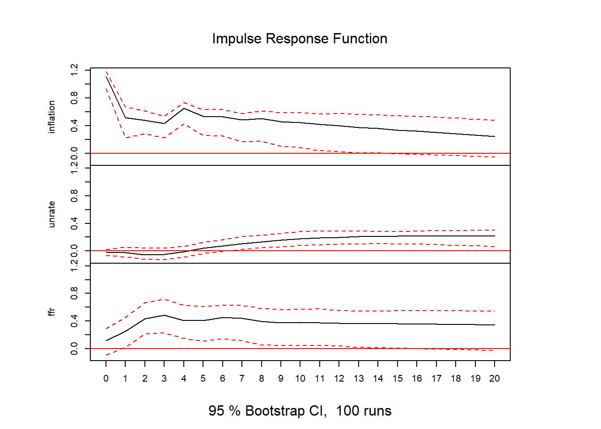
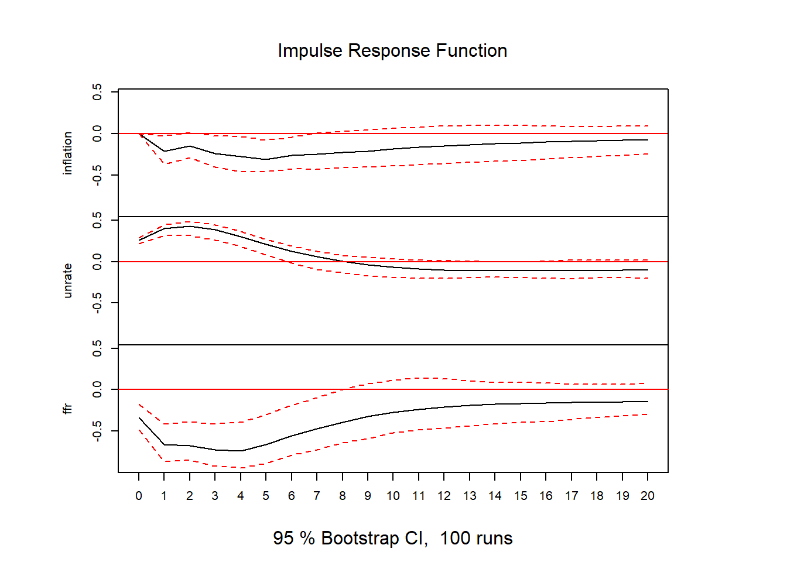
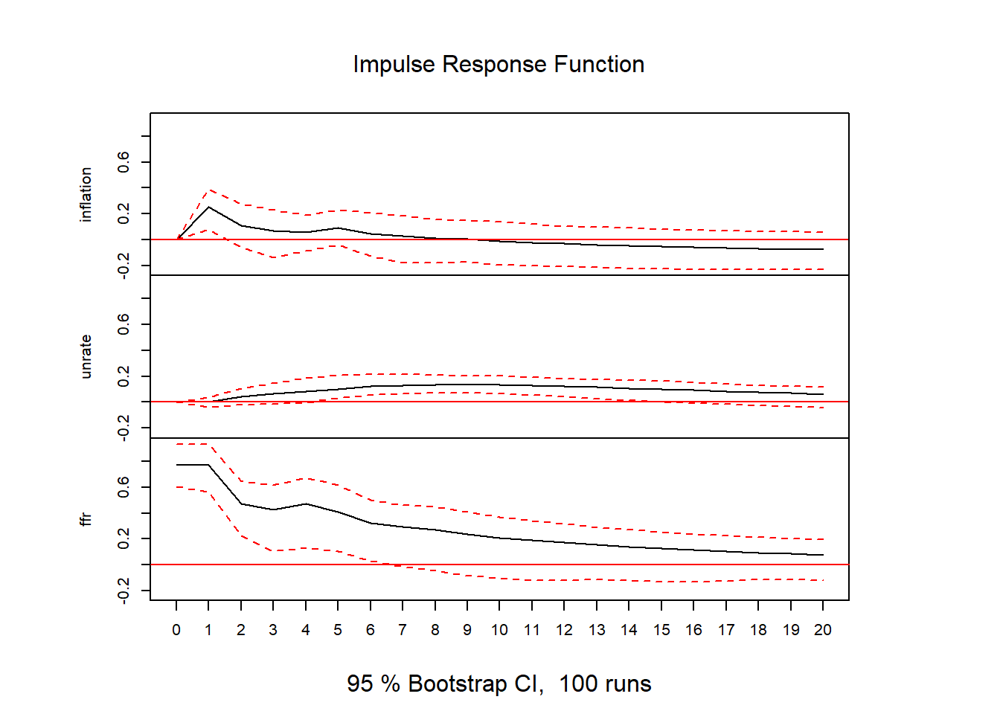

library(tidyverse) # An umbrella library consisting of 9 R packages
library(vars)
library(svars)
library(lmtest)
library(forecast)
library(haven) # To read data from stata/spssVAR and SVAR in R
Vector Autoregression by Stock and Watson JEP-2001
Vector Autoregression
Introduction
In this post I am going to reproduce results of article by Stock, James H., and Mark W. Watson, “Vector Autoregressions,” Journal of Economic Perspectives, Vol. 15 No. 4 (Fall 2001), 101-115. using R.
Load necessary libraries
Load data
sw_df <- read_dta("data/var_jep.dta")Inspect data
head() and tail() provides first 6 and last 6 observations, respectively. One can use glimpse to see nature of each variable.
sw_df |> head()# A tibble: 6 × 5
yq inflation unrate ffr quarterly
<chr> <dbl> <dbl> <dbl> <dbl+lbl>
1 1960q1 1.84 4.73 1.34 1 [1960q1]
2 1960q2 1.81 4.40 1.49 2 [1960q2]
3 1960q3 2.88 4.10 1.92 3 [1960q3]
4 1960q4 4.04 4.23 2.36 4 [1960q4]
5 1961q1 3.96 4.03 2.48 5 [1961q1]
6 1961q2 2.33 4.20 2.69 6 [1961q2]sw_df |> tail()# A tibble: 6 × 5
yq inflation unrate ffr quarterly
<chr> <dbl> <dbl> <dbl> <dbl+lbl>
1 2004q3 0.916 4.23 5.09 179 [2004q3]
2 2004q4 1.33 4.10 5.31 180 [2004q4]
3 2005q1 3.26 4.03 5.68 181 [2005q1]
4 2005q2 2.37 4.03 6.27 182 [2005q2]
5 2005q3 1.57 4 6.52 183 [2005q3]
6 2005q4 2.05 3.97 6.47 184 [2005q4]Set the time series data
sw_df <- ts(sw_df, start = c(1960, 1), frequency = 4)
sw_df1 <- sw_df[,2:4]
## Plot the time series data
plot(sw_df1, main = "Time Series Plot", ylab = "Percent", xlab = "Year")Estimate Reduced form model
As I have explained
that reduced VAR is used only for forecasting and it has lags of all endogenous variables. First we select appropriate lags usinglag length selection criteria as follows:
# Estimate VAR model
VARselect(sw_df1, lag.max = 4,
type = "const", season = 4)$selection
AIC(n) HQ(n) SC(n) FPE(n)
4 2 2 4
$criteria
1 2 3 4
AIC(n) -2.0625426 -2.64212476 -2.70080021 -2.72796047
HQ(n) -1.9115051 -2.42635701 -2.42030214 -2.38273207
SC(n) -1.6900309 -2.10996529 -2.00899290 -1.87650531
FPE(n) 0.1271453 0.07123427 0.06720253 0.06544474Estimation of VAR model with lag order 4
In original article there are four lags selected and AIC and FPE is also indicating 4 lags, therefore, I estimate VAR model with 4 lags:
var_model <- VAR(sw_df1, p = 4, type = "const")
summary(var_model)
VAR Estimation Results:
=========================
Endogenous variables: inflation, unrate, ffr
Deterministic variables: const
Sample size: 180
Log Likelihood: -477.037
Roots of the characteristic polynomial:
0.9664 0.9664 0.725 0.725 0.683 0.647 0.647 0.5903 0.5903 0.383 0.383 0.3399
Call:
VAR(y = sw_df1, p = 4, type = "const")
Estimation results for equation inflation:
==========================================
inflation = inflation.l1 + unrate.l1 + ffr.l1 + inflation.l2 + unrate.l2 + ffr.l2 + inflation.l3 + unrate.l3 + ffr.l3 + inflation.l4 + unrate.l4 + ffr.l4 + const
Estimate Std. Error t value Pr(>|t|)
inflation.l1 0.41944 0.07416 5.656 6.6e-08 ***
unrate.l1 -0.40807 0.35613 -1.146 0.253495
ffr.l1 0.32444 0.10796 3.005 0.003062 **
inflation.l2 0.20687 0.08146 2.540 0.012014 *
unrate.l2 0.82066 0.62569 1.312 0.191455
ffr.l2 -0.31556 0.14768 -2.137 0.034075 *
inflation.l3 0.02329 0.08267 0.282 0.778525
unrate.l3 -0.94999 0.62286 -1.525 0.129097
ffr.l3 0.09840 0.14853 0.663 0.508550
inflation.l4 0.30419 0.07791 3.905 0.000137 ***
unrate.l4 0.39419 0.33857 1.164 0.245969
ffr.l4 -0.09219 0.11010 -0.837 0.403630
const 0.90120 0.39189 2.300 0.022707 *
---
Signif. codes: 0 '***' 0.001 '**' 0.01 '*' 0.05 '.' 0.1 ' ' 1
Residual standard error: 1.112 on 167 degrees of freedom
Multiple R-Squared: 0.81, Adjusted R-squared: 0.7963
F-statistic: 59.32 on 12 and 167 DF, p-value: < 2.2e-16
Estimation results for equation unrate:
=======================================
unrate = inflation.l1 + unrate.l1 + ffr.l1 + inflation.l2 + unrate.l2 + ffr.l2 + inflation.l3 + unrate.l3 + ffr.l3 + inflation.l4 + unrate.l4 + ffr.l4 + const
Estimate Std. Error t value Pr(>|t|)
inflation.l1 0.011888 0.017381 0.684 0.4949
unrate.l1 1.547404 0.083462 18.540 < 2e-16 ***
ffr.l1 0.003960 0.025300 0.157 0.8758
inflation.l2 -0.044649 0.019091 -2.339 0.0205 *
unrate.l2 -0.656306 0.146636 -4.476 1.4e-05 ***
ffr.l2 0.040230 0.034611 1.162 0.2467
inflation.l3 0.025026 0.019375 1.292 0.1983
unrate.l3 -0.020975 0.145972 -0.144 0.8859
ffr.l3 -0.024983 0.034809 -0.718 0.4739
inflation.l4 0.021502 0.018258 1.178 0.2406
unrate.l4 0.060730 0.079347 0.765 0.4451
ffr.l4 0.006286 0.025804 0.244 0.8078
const 0.196298 0.091843 2.137 0.0340 *
---
Signif. codes: 0 '***' 0.001 '**' 0.01 '*' 0.05 '.' 0.1 ' ' 1
Residual standard error: 0.2605 on 167 degrees of freedom
Multiple R-Squared: 0.9718, Adjusted R-squared: 0.9697
F-statistic: 478.8 on 12 and 167 DF, p-value: < 2.2e-16
Estimation results for equation ffr:
====================================
ffr = inflation.l1 + unrate.l1 + ffr.l1 + inflation.l2 + unrate.l2 + ffr.l2 + inflation.l3 + unrate.l3 + ffr.l3 + inflation.l4 + unrate.l4 + ffr.l4 + const
Estimate Std. Error t value Pr(>|t|)
inflation.l1 0.097190 0.057055 1.703 0.090345 .
unrate.l1 -1.272255 0.273972 -4.644 6.9e-06 ***
ffr.l1 0.992217 0.083050 11.947 < 2e-16 ***
inflation.l2 0.168626 0.062668 2.691 0.007854 **
unrate.l2 1.452269 0.481346 3.017 0.002952 **
ffr.l2 -0.405464 0.113612 -3.569 0.000468 ***
inflation.l3 -0.069648 0.063601 -1.095 0.275061
unrate.l3 -0.752816 0.479166 -1.571 0.118053
ffr.l3 0.343298 0.114264 3.004 0.003071 **
inflation.l4 -0.049757 0.059933 -0.830 0.407599
unrate.l4 0.500617 0.260463 1.922 0.056305 .
ffr.l4 -0.008678 0.084702 -0.102 0.918518
const 0.391706 0.301482 1.299 0.195642
---
Signif. codes: 0 '***' 0.001 '**' 0.01 '*' 0.05 '.' 0.1 ' ' 1
Residual standard error: 0.8551 on 167 degrees of freedom
Multiple R-Squared: 0.9352, Adjusted R-squared: 0.9306
F-statistic: 201 on 12 and 167 DF, p-value: < 2.2e-16
Covariance matrix of residuals:
inflation unrate ffr
inflation 1.23552 -0.02536 0.12950
unrate -0.02536 0.06786 -0.08958
ffr 0.12950 -0.08958 0.73121
Correlation matrix of residuals:
inflation unrate ffr
inflation 1.0000 -0.0876 0.1362
unrate -0.0876 1.0000 -0.4021
ffr 0.1362 -0.4021 1.0000
Note
Individual coefficients in VAR model should not be interpreted and current VAR model form is only for forecasting.
Perform granger causality test
Assuming var_model is your VAR model with lag order 4
# Perform Granger causality test for each effect variable separately
granger_causality_unrate <- causality(var_model, cause = "inflation")
granger_causality_ffr <- causality(var_model, cause = "unrate")
granger_causality_inf <- causality(var_model, cause = "ffr")
granger_causality_inf$Granger
Granger causality H0: ffr do not Granger-cause inflation unrate
data: VAR object var_model
F-Test = 2.2943, df1 = 8, df2 = 501, p-value = 0.02025
$Instant
H0: No instantaneous causality between: ffr and inflation unrate
data: VAR object var_model
Chi-squared = 26.417, df = 2, p-value = 1.835e-06granger_causality_unrate$Granger
Granger causality H0: inflation do not Granger-cause unrate ffr
data: VAR object var_model
F-Test = 3.9914, df1 = 8, df2 = 501, p-value = 0.0001327
$Instant
H0: No instantaneous causality between: inflation and unrate ffr
data: VAR object var_model
Chi-squared = 3.5029, df = 2, p-value = 0.1735granger_causality_ffr$Granger
Granger causality H0: unrate do not Granger-cause inflation ffr
data: VAR object var_model
F-Test = 4.5234, df1 = 8, df2 = 501, p-value = 2.513e-05
$Instant
H0: No instantaneous causality between: unrate and inflation ffr
data: VAR object var_model
Chi-squared = 25.203, df = 2, p-value = 3.367e-06If one has to go by pair of variables
Caution
Granger causality is test of descriptive statistics, so dont interpret it in structural inference sense. For reference, please read paper I am reproducing here.
grangertest(inflation ~ ffr,order = 4, data = sw_df1)Granger causality test
Model 1: inflation ~ Lags(inflation, 1:4) + Lags(ffr, 1:4)
Model 2: inflation ~ Lags(inflation, 1:4)
Res.Df Df F Pr(>F)
1 171
2 175 -4 4.7866 0.001101 **
---
Signif. codes: 0 '***' 0.001 '**' 0.01 '*' 0.05 '.' 0.1 ' ' 1grangertest(inflation ~ unrate,order = 4, data = sw_df1)Granger causality test
Model 1: inflation ~ Lags(inflation, 1:4) + Lags(unrate, 1:4)
Model 2: inflation ~ Lags(inflation, 1:4)
Res.Df Df F Pr(>F)
1 171
2 175 -4 4.0375 0.003734 **
---
Signif. codes: 0 '***' 0.001 '**' 0.01 '*' 0.05 '.' 0.1 ' ' 1Forecast Error Variance Decomposition
Another descriptive measure in reduced form VAR model
Forecast error variance decomposition only at 4, 8 and 12 quarters
fevd_model1<- fevd(var_model, n.ahead = 1)
fevd_model2 <- fevd(var_model, n.ahead = 4)
fevd_model3 <- fevd(var_model, n.ahead = 8)
fevd_model4 <- fevd(var_model, n.ahead = 12)
fevd_model1$inflation
inflation unrate ffr
[1,] 1 0 0
$unrate
inflation unrate ffr
[1,] 0.007673522 0.9923265 0
$ffr
inflation unrate ffr
[1,] 0.01856258 0.1534387 0.8279987fevd_model2$inflation
inflation unrate ffr
[1,] 1.0000000 0.00000000 0.00000000
[2,] 0.9317696 0.02861707 0.03961330
[3,] 0.9230811 0.03650735 0.04041154
[4,] 0.9020235 0.06009546 0.03788099
$unrate
inflation unrate ffr
[1,] 0.007673522 0.9923265 0.0000000000
[2,] 0.004327086 0.9956314 0.0000415495
[3,] 0.009943936 0.9857939 0.0042622129
[4,] 0.012134052 0.9770071 0.0108588254
$ffr
inflation unrate ffr
[1,] 0.01856258 0.1534387 0.8279987
[2,] 0.04230040 0.3011456 0.6565540
[3,] 0.09893196 0.3731835 0.5278845
[4,] 0.13724493 0.4220231 0.4407320Impulse response function
Third measure of descriptive statistics for reduced VAR. IRF is also from SVAR, so its important to distinguish which VAR model one is working with.
# Estimate impulse response function from VAR
irf_model <- irf(var_model, impulse = c("inflation", "unrate", "ffr"), response = c("inflation", "unrate", "ffr"), n.ahead = 20)
plot(irf_model, yline = 0, ncol = 3, by = "response", main = "Impulse Response Function")


Structural VAR
Difference between Reduced VAR, Recursive VAR and SVAR is already explained in SVAR
. Therefore, I am only estimating it here usingR.
# Define the A and B matrices for SVAR
A <- matrix(c(1, 0, 0, NA, 1, 0, NA, NA, 1), nrow = 3, byrow = TRUE)
B <- matrix(c(NA, 0, 0, 0, NA, 0, 0, 0, 1), nrow = 3, byrow = TRUE)# Perform SVAR
svar_model <- SVAR(var_model, A = A, B = B)
svar_model
SVAR Estimation Results:
========================
Estimated A matrix:
inflation unrate ffr
inflation 1.00000 0.000 0
unrate 0.02053 1.000 0
ffr -0.07831 1.291 1
Estimated B matrix:
inflation unrate ffr
inflation 1.112 0.0000 0
unrate 0.000 0.2595 0
ffr 0.000 0.0000 1irf_ffr <- irf(svar_model, impulse = "ffr", response = c("inflation", "unrate", "ffr"), boot =
FALSE)
plot(irf_ffr)